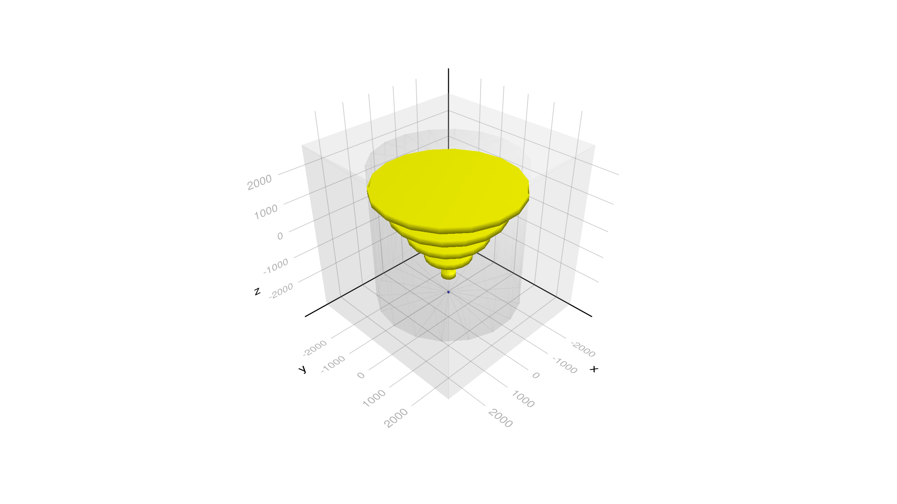

Basic/B2a Example
It is equivalent to the B2a example in Geant4 but re-written with a new more Julia friendly interface. The core of the example is to create an instance of the type G4JLApplication with all the essential elements defined (detector and geometry, physics list, primary particles generator, actions, simulated data being accumulated, mapping of logical volumes to sensitive detectors, etc.)
Import the Geant4 and Geant4.SystemOfUnits modules
using Geant4
using Geant4.SystemOfUnits
using Printf, GeometryBasicsWARNING: using Geant4.get in module Main conflicts with an existing identifier.Define the Detector Parameters and Geometry
We include a file to define de structure B2aDetector and the construction method B2aConstruct to make the notebook more manageable
include(joinpath(@__DIR__, "DetectorB2a.jl"))Define TrackerHit structure
struct TrackerHit
trackID::Int32
chamberNb::Int32
edep::Float64
pos::Point3{Float64}
end
function Base.show(io::IO, hit::TrackerHit)
(;trackID, chamberNb, edep, pos) = hit
@printf(io, "\ntrackID: %3d chamberNb: %2d Edep: %.3f MeV Position: (%3f, %3f, %3f)", trackID, chamberNb, edep/MeV, pos...)
endDefine Sensitive Detector for the chambers
It implies to define a data structure where to accumulate the TrackerHits for each event, and the callback functions:
intilializecalled at the beginning of each eventendOfEventcalled at the end of the eventprocessHitcalled for each hit (step ending in the associated logical volume) to be processed
all of the callback functions get the declared data structure as first argument
#---SD collected data------------------------------------------------------------------------------
struct B2aSDData <: G4JLSDData
trackerHits::Vector{TrackerHit}
B2aSDData() = new([])
end
#---Initialize method------------------------------------------------------------------------------
function _initialize(::G4HCofThisEvent, data::B2aSDData)::Nothing
empty!(data.trackerHits)
return
end
#---End of Event method----------------------------------------------------------------------------
function _endOfEvent(::G4HCofThisEvent, data::B2aSDData)::Nothing
return
end
#---Process Hit method-----------------------------------------------------------------------------
function _processHits(step::G4Step, ::G4TouchableHistory, data::B2aSDData)::Bool
edep = step |> GetTotalEnergyDeposit
edep < 0. && return false
pos = step |> GetPostStepPoint |> GetPosition
push!(data.trackerHits, TrackerHit(step |> GetTrack |> GetTrackID,
step |> GetPreStepPoint |> GetTouchable |> GetCopyNumber,
edep,
Point3{Float64}(x(pos),y(pos),z(pos))))
return true
end_processHits (generic function with 1 method)And create a specialized instance of G4JLSensitiveDetector
#---Create SD instance-----------------------------------------------------------------------------
chamber_SD = G4JLSensitiveDetector("Chamber_SD", B2aSDData(); # SD name an associated data are mandatory
processhits_method=_processHits, # process hist method (also mandatory)
initialize_method=_initialize, # intialize method
endofevent_method=_endOfEvent); # end of event method
Define an End Event Action
This is collect all results each event. Only printing at this time.
#---End Event Action-------------------------------------------------------------------------------
function endeventaction(evt::G4Event, app::G4JLApplication)
hits = getSDdata(app, "Chamber_SD").trackerHits
eventID = evt |> GetEventID
if eventID < 10 || eventID % 100 == 0
G4JL_println("Event: $eventID with $(length(hits)) hits stored in this event")
end
return
endendeventaction (generic function with 1 method)Define the primary particle generator (Particle Gun)
particlegun = G4JLGunGenerator(particle = "proton",
energy = 3GeV,
direction = G4ThreeVector(0,0,1),
position = G4ThreeVector(0,0,-2940.0))G4JLGunGenerator("ParticleGun", Geant4.G4JLParticleGunData(nothing, "proton", G4ThreeVector(0.0,0.0,1.0), G4ThreeVector(0.0,0.0,-2940.0), 3000.0), Geant4.var"#init#23"(), Geant4.var"#gen#24"(), G4JLGeneratorAction[])Instantiate a G4JLApplication with all the elements
The G4RunManager is created at this moment
#---Create the Application-------------------------------------------------------------------------
app = G4JLApplication( detector = B2aDetector(nChambers=5), # detector with parameters
generator = particlegun, # primary particle generator
nthreads = 4, # number of threads (MT)
physics_type = FTFP_BERT, # what physics list to instantiate
endeventaction_method = endeventaction, # end event action
sdetectors = ["Chamber_LV+" => chamber_SD] # mapping of LVs to SDs (+ means multiple LVs with same name)
); **************************************************************
Geant4 version Name: geant4-11-01-patch-01 [MT] (10-February-2023)
<< in Multi-threaded mode >>
Copyright : Geant4 Collaboration
References : NIM A 506 (2003), 250-303
: IEEE-TNS 53 (2006), 270-278
: NIM A 835 (2016), 186-225
WWW : http://geant4.org/
**************************************************************Final steps
Configure the application, initialize the run and fire the beam for 0 events to finalize all initializations
configure(app)initialize(app)Checking overlaps for volume Target:0 (G4Tubs) ... OK!
Checking overlaps for volume Tracker:0 (G4Tubs) ... OK!
Checking overlaps for volume Chamber_PV:1 (G4Tubs) ... OK!
Checking overlaps for volume Chamber_PV:2 (G4Tubs) ... OK!
Checking overlaps for volume Chamber_PV:3 (G4Tubs) ... OK!
Checking overlaps for volume Chamber_PV:4 (G4Tubs) ... OK!
Checking overlaps for volume Chamber_PV:5 (G4Tubs) ... OK!beamOn(app, 0)#---Forcing the loading of G4Vis extension------------------------------------------
using CairoMakie, Rotations, IGLWrap_jll # to force loding G4Vis extension
world = GetWorldVolume()
draw(world)
CairoMakie.Screen{IMAGE}beamOn(app,10)G4WT3 > Event: 0 with 71 hits stored in this event
G4WT3 > Event: 4 with 91 hits stored in this event
G4WT1 > Event: 2 with 112 hits stored in this event
G4WT0 > Event: 1 with 170 hits stored in this event
G4WT0 > Event: 7 with 145 hits stored in this event
G4WT1 > Event: 6 with 117 hits stored in this event
G4WT0 > Event: 8 with 61 hits stored in this event
G4WT3 > Event: 5 with 75 hits stored in this event
G4WT1 > Event: 9 with 117 hits stored in this event
G4WT2 > Event: 3 with 276 hits stored in this event@time beamOn(app,1000)G4WT3 > Event: 0 with 59 hits stored in this event
G4WT3 > Event: 1 with 89 hits stored in this event
G4WT3 > Event: 2 with 115 hits stored in this event
G4WT3 > Event: 3 with 311 hits stored in this event
G4WT3 > Event: 4 with 13 hits stored in this event
G4WT3 > Event: 5 with 258 hits stored in this event
G4WT3 > Event: 6 with 94 hits stored in this event
G4WT3 > Event: 7 with 76 hits stored in this event
G4WT3 > Event: 8 with 158 hits stored in this event
G4WT3 > Event: 9 with 87 hits stored in this event
G4WT0 > Event: 100 with 93 hits stored in this event
G4WT3 > Event: 200 with 225 hits stored in this event
G4WT1 > Event: 300 with 14 hits stored in this event
G4WT3 > Event: 400 with 54 hits stored in this event
G4WT0 > Event: 500 with 92 hits stored in this event
G4WT3 > Event: 600 with 70 hits stored in this event
G4WT1 > Event: 700 with 60 hits stored in this event
G4WT1 > Event: 800 with 75 hits stored in this event
G4WT2 > Event: 900 with 508 hits stored in this event
1.454949 seconds (740.41 k allocations: 13.304 MiB)SetParticleEnergy(particlegun, 500MeV)@time beamOn(app,10000)G4WT1 > Event: 0 with 224 hits stored in this event
G4WT1 > Event: 1 with 294 hits stored in this event
G4WT1 > Event: 2 with 158 hits stored in this event
G4WT0 > Event: 100 with 248 hits stored in this event
G4WT1 > Event: 3 with 4 hits stored in this event
G4WT1 > Event: 4 with 211 hits stored in this event
G4WT1 > Event: 5 with 199 hits stored in this event
G4WT1 > Event: 6 with 131 hits stored in this event
G4WT1 > Event: 7 with 174 hits stored in this event
G4WT1 > Event: 8 with 135 hits stored in this event
G4WT1 > Event: 9 with 143 hits stored in this event
G4WT1 > Event: 200 with 197 hits stored in this event
G4WT1 > Event: 300 with 239 hits stored in this event
G4WT2 > Event: 400 with 250 hits stored in this event
G4WT3 > Event: 500 with 181 hits stored in this event
G4WT2 > Event: 600 with 136 hits stored in this event
G4WT1 > Event: 700 with 175 hits stored in this event
G4WT3 > Event: 800 with 204 hits stored in this event
G4WT1 > Event: 900 with 244 hits stored in this event
G4WT3 > Event: 1000 with 246 hits stored in this event
G4WT1 > Event: 1100 with 155 hits stored in this event
G4WT0 > Event: 1200 with 198 hits stored in this event
G4WT1 > Event: 1300 with 209 hits stored in this event
G4WT0 > Event: 1400 with 142 hits stored in this event
G4WT3 > Event: 1500 with 224 hits stored in this event
G4WT2 > Event: 1600 with 151 hits stored in this event
G4WT3 > Event: 1700 with 152 hits stored in this event
G4WT2 > Event: 1800 with 145 hits stored in this event
G4WT1 > Event: 1900 with 193 hits stored in this event
G4WT0 > Event: 2000 with 256 hits stored in this event
G4WT1 > Event: 2100 with 217 hits stored in this event
G4WT0 > Event: 2200 with 141 hits stored in this event
G4WT1 > Event: 2300 with 171 hits stored in this event
G4WT2 > Event: 2400 with 137 hits stored in this event
G4WT1 > Event: 2500 with 212 hits stored in this event
G4WT2 > Event: 2600 with 111 hits stored in this event
G4WT1 > Event: 2700 with 126 hits stored in this event
G4WT2 > Event: 2800 with 0 hits stored in this event
G4WT1 > Event: 2900 with 0 hits stored in this event
G4WT0 > Event: 3000 with 205 hits stored in this event
G4WT3 > Event: 3100 with 180 hits stored in this event
G4WT1 > Event: 3200 with 152 hits stored in this event
G4WT0 > Event: 3300 with 171 hits stored in this event
G4WT3 > Event: 3400 with 156 hits stored in this event
G4WT0 > Event: 3500 with 124 hits stored in this event
G4WT2 > Event: 3600 with 200 hits stored in this event
G4WT3 > Event: 3700 with 163 hits stored in this event
G4WT2 > Event: 3800 with 482 hits stored in this event
G4WT0 > Event: 3900 with 139 hits stored in this event
G4WT2 > Event: 4000 with 1429 hits stored in this event
G4WT0 > Event: 4100 with 28 hits stored in this event
G4WT2 > Event: 4200 with 165 hits stored in this event
G4WT0 > Event: 4300 with 132 hits stored in this event
G4WT2 > Event: 4400 with 142 hits stored in this event
G4WT1 > Event: 4500 with 223 hits stored in this event
G4WT2 > Event: 4600 with 147 hits stored in this event
G4WT1 > Event: 4700 with 142 hits stored in this event
G4WT2 > Event: 4800 with 152 hits stored in this event
G4WT1 > Event: 4900 with 153 hits stored in this event
G4WT2 > Event: 5000 with 162 hits stored in this event
G4WT3 > Event: 5100 with 176 hits stored in this event
G4WT2 > Event: 5200 with 320 hits stored in this event
G4WT0 > Event: 5300 with 155 hits stored in this event
G4WT3 > Event: 5400 with 175 hits stored in this event
G4WT0 > Event: 5500 with 171 hits stored in this event
G4WT3 > Event: 5600 with 147 hits stored in this event
G4WT0 > Event: 5700 with 3 hits stored in this event
G4WT3 > Event: 5800 with 145 hits stored in this event
G4WT2 > Event: 5900 with 156 hits stored in this event
G4WT0 > Event: 6000 with 212 hits stored in this event
G4WT2 > Event: 6100 with 8 hits stored in this event
G4WT3 > Event: 6200 with 277 hits stored in this event
G4WT2 > Event: 6300 with 0 hits stored in this event
G4WT0 > Event: 6400 with 227 hits stored in this event
G4WT2 > Event: 6500 with 208 hits stored in this event
G4WT3 > Event: 6600 with 104 hits stored in this event
G4WT0 > Event: 6700 with 200 hits stored in this event
G4WT3 > Event: 6800 with 4 hits stored in this event
G4WT0 > Event: 6900 with 153 hits stored in this event
G4WT3 > Event: 7000 with 166 hits stored in this event
G4WT0 > Event: 7100 with 141 hits stored in this event
G4WT3 > Event: 7200 with 182 hits stored in this event
G4WT2 > Event: 7300 with 140 hits stored in this event
G4WT3 > Event: 7400 with 249 hits stored in this event
G4WT0 > Event: 7500 with 8 hits stored in this event
G4WT3 > Event: 7600 with 233 hits stored in this event
G4WT0 > Event: 7700 with 155 hits stored in this event
G4WT3 > Event: 7800 with 0 hits stored in this event
G4WT0 > Event: 7900 with 201 hits stored in this event
G4WT3 > Event: 8000 with 8 hits stored in this event
G4WT1 > Event: 8100 with 161 hits stored in this event
G4WT3 > Event: 8200 with 143 hits stored in this event
G4WT0 > Event: 8300 with 3 hits stored in this event
G4WT3 > Event: 8400 with 170 hits stored in this event
G4WT0 > Event: 8500 with 186 hits stored in this event
G4WT3 > Event: 8600 with 146 hits stored in this event
G4WT2 > Event: 8700 with 142 hits stored in this event
G4WT0 > Event: 8800 with 177 hits stored in this event
G4WT3 > Event: 8900 with 192 hits stored in this event
G4WT0 > Event: 9000 with 115 hits stored in this event
G4WT1 > Event: 9100 with 119 hits stored in this event
G4WT0 > Event: 9200 with 156 hits stored in this event
G4WT3 > Event: 9300 with 0 hits stored in this event
G4WT0 > Event: 9400 with 155 hits stored in this event
G4WT1 > Event: 9500 with 132 hits stored in this event
G4WT0 > Event: 9600 with 144 hits stored in this event
G4WT3 > Event: 9700 with 270 hits stored in this event
G4WT2 > Event: 9800 with 1068 hits stored in this event
G4WT3 > Event: 9900 with 137 hits stored in this event
7.464884 seconds (6.56 M allocations: 103.498 MiB)